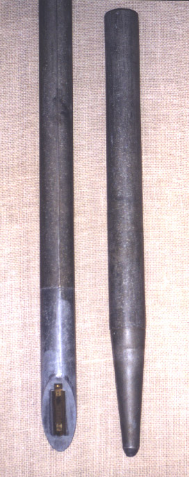
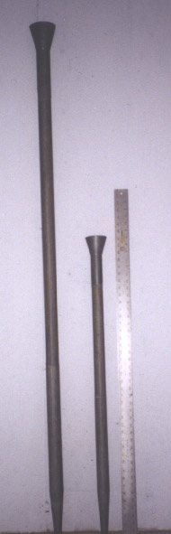
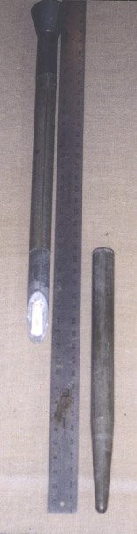
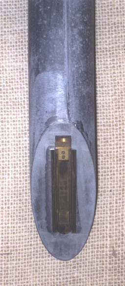

|
Clarinet English Clarionet English Orchestral Clarinet English |
Clarinetto Italian Clarinette French, German Klarinett[e] German |
|
Cremona English? |
This is a favorite solo stop on British and American organs, and can be one of the most successful organ imitations of an orchestral instrument. It is usually found at 8' pitch, occasionally at 16', and rarely at 4'.
Since this organ stop is, generally speaking, imitative, the history of the orchestral instrument of the same name may help provide some perspective. While the invention of the clarinet can be traced to Denner at the end of the 17th century, the name clarinet did not appear until around 1732, having been known earlier by the name chalumeau. However, these early clarinets were tonally closer to the oboe than the modern clarinet, whose tone did not develop until the early 1800's.
While Grove dates the organ stop from 1790 (Clarinetto in southern Germany), it does not appear with any frequency until the mid-1800's. Grove traces its origin to the Cromorne.
The Clarinet is usually constructed with half-length cylindrical metal resonators, which reinforce the odd-numbered harmonics (as with a stopped flue pipe), and give the stop much of its characteristic hollow tone. This construction is especially common in France, England and America, where it is usually made as a striking reed. Audsley provides the illustration reproduced to the right. In German and Swiss Romantic instruments it was usually a free reed, with a tone that Audsley and Wedgwood disparaged as feeble, thin, and not imitative. Some examples have bells, which enhance the even-numbered harmonics, and some have inverted-conical resonators, which produce tones which are even less imitative. The resonators may be open, shaded, or capped. Wooden resonators have occasionally been used, either square or cylindrical. Audsley gives the Clarinet a medium-scale closed shallot with a triangular opening.
While generally imitative to a greater or lesser degree, the tone of the Clarinet varies a good deal. In its treble range it has been described as being even better than its orchestral prototype, but the bass is difficult to voice properly, and seldom approaches the richness of the original. Wedgwood reports that the Clarinet has occasionally been voiced as a soft Trumpet. Bonavia-Hunt describes three types of Clarinet tone:
On the theatre organ, the Clarinet is the most common reed after the Vox Humana and Trumpet.
Attempts have been made to imitate the tone of the orchestral clarinet by flue pipes; see Flue Clarinet.
An interesting form of free-reed Clarinet, which I had not encountered in the literature, was brought to my attention by Mr. Willard Jost, who provided the photographs reproduced below. He was acquainted with Sidney F. Eaton, formerly chief engineer and voicer for the E. M. Skinner company. Mr. Eaton describes this stop as �very fussy and delicate�, taking special tools to voice, and speaking on 3" of wind.
  
There are alternate meanings for the name Cremona.
See also Clarinete, Clarinet Flute.
|
Bass Clarinet Bell Clarinet Clarinet à Pavillon |
Clarinette-Aigue Clarinette-Basse Double Clarinet Flue Clarinet |
Labial Clarinet Major Clarinet Minor Clarinet Solo Clarinet |
The name Clarinet is the most common; Osiris contains nearly 200 examples, all at 8' pitch except for half a dozen at 16' and three at 4' (not counting unified theatre organs). The next most common is Clarinette, with about 70 examples, five of which are at 16'. Osiris contains 22 examples of Clarionet, 17 of Klarinette, eleven of Orchestral Clarinet, ten of Clarinetto, and three of Klarinett. The earliest known examples are given below.
Clarinet 8', Great; Westville United Methodist Church, New Haven, Connecticut, USA; Hook 1852. Compass from f1. Originally built for Chapel St Church, New Haven.
Clarinet 8', Orchestral Solo; Town Hall, Leeds, England; Gray & Davison 1859.
Clarinette 8', Manual II; Ochsenhausen, Baden-Württemburg, Germany; Gabler 1755.
Clarinette 8', Positif; St. Sulpice, Paris, France; Clicquot 1781. Original name may have been Chalumeau.
Clarinette 8', Positif; St. Clotilde, Paris, France; Cavaill´-Coll 1859.
Clarinette 8', Choir; St. Bartholomew, Armley, England; Schulze 1866-69.
Clarionet 8', Choir; St. John's Cathedral, Providence, Rhode Island, USA; Hook 1851. May have been a later addition.
Clarionet 8', Solo; Town Hall, Glasgow, Scotland; Gray & Davison 1853, 1855, 1876.
Clarionet 8', Choir; First Congregational Society (Unitarian), Jamaica Plain (Boston), Massachusetts, USA; Hook 1854.
Orchestral Clarinet 8', Solo; Alexandra Palace, London, England; Willis 1875.
Orchestral Clarinet 8', Solo; St. Andrew's Halls (The Public Halls), Glasgow, Scotland; Lewis 1877.
Clarinetto 16'; San Pietro, Parre, Bergamo,Italy; Balicco-Bossi 1898.
See the Sound Files appendix for general information.
| Clarinet 8', Swell | St. Anne's Church, Moseley, Birmingham, England | Nicholson, 1969 | arpeggio | St. Anne |
| Clarinet 8', Choir | Culver Academies, Indiana, USA | Möller 1951 | arpeggio | St. Anne |
|
Original website compiled by Edward L. Stauff. For educational use only. Clarinet.html - Last updated 13 February 2009. |
Home Full Index |
{kind=link}